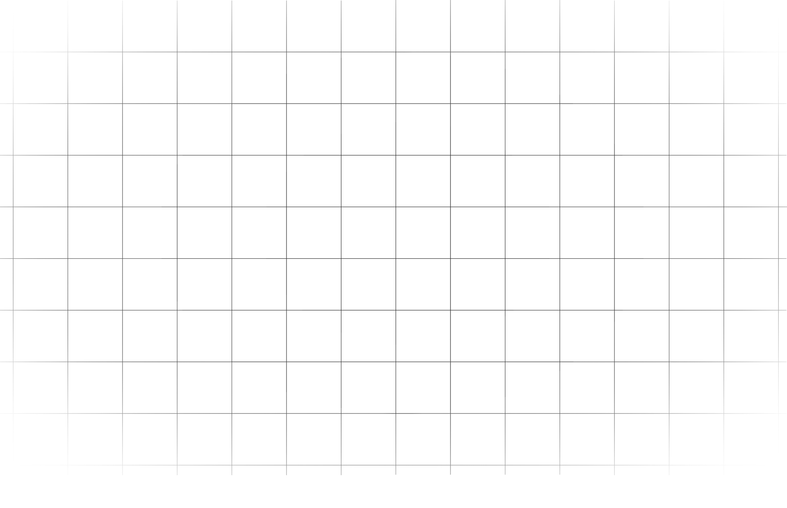
HI, I’M AGUS
I’m an advanced Software Engineering student with a strong passion for designing and developing responsive, secure, and efficient systems for data management. I focus on building solutions that are not only functional but also optimized for performance, being confortable on both high and low level programing.
I enjoy working across all layers of a system, from architecture to implementation, and focus on writing clean, maintainable, and scalable code. My academic background, combined with a hands-on approach to problem-solving, allows me to create solutions that are orientated to real-world needs.
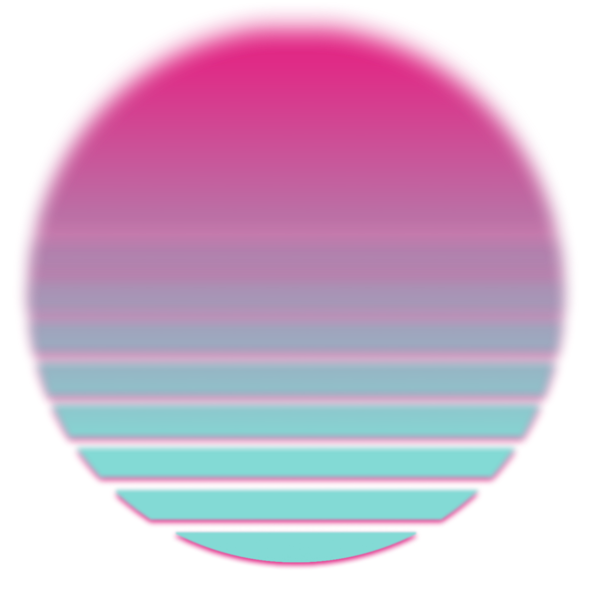
TECH STACK
WEB DEV.
LANGUAGES
TOOLS
MY PROJECTS
PATIENT MANAGEMENT SYSTEM
Currently operational web platform for occupational therapy, actively managing over 1000+ registered patients. Patients independently register personal data, and the therapist promotes them to official medical records when needed. Features include secure image uploads, insurance tracking, and medical referrals.
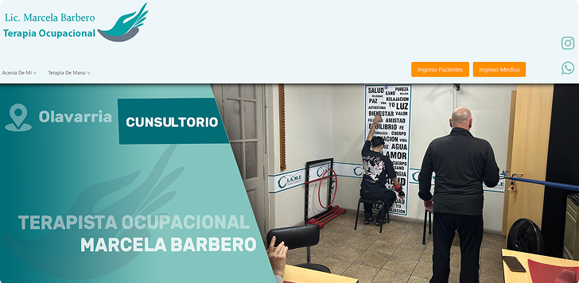
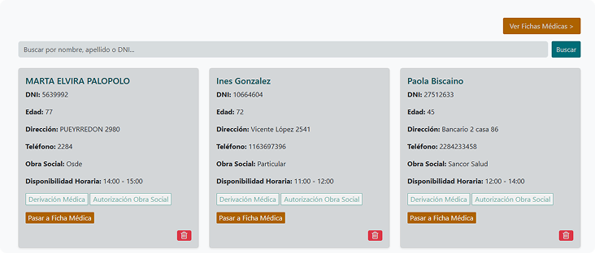
Built to streamline administrative workflows while offering a secure experience. Developed entirely with PHP, MySQL, and Bootstrap. The frontend architecture intentionally omits JavaScript to guarantee a lightweight, fast-loading, and highly accessible interface across all devices.
BLOODY HELL! A MINECRAFT MOD
A large-scale game modification developed entirely in Java using the Forge API. It expands the core game engine by implementing custom dimensions, complex entity behaviors, and advanced functional mechanics.
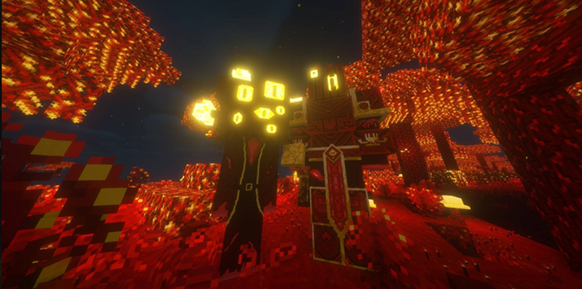
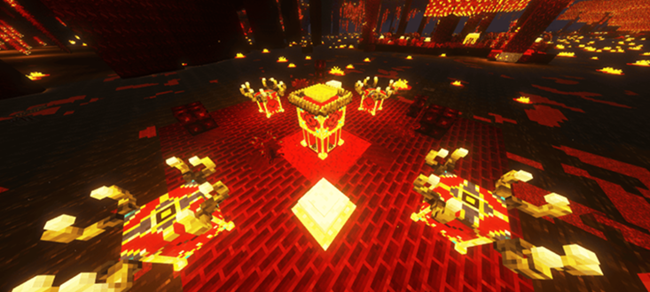
The project emphasizes object-oriented programming principles and modular system design within a highly constrained sandbox environment. Key technical implementations include custom rendering pipelines utilizing BlockEntityRenderers, event-driven state management, and optimized particle generation.
GAMES LIBRARY MANAGER
Full-stack web application developed in Go to manage and track personal video game libraries. It integrates directly with the Steam API to fetch real-time game data and images, dynamically populating the catalog without heavy local storage requirements.
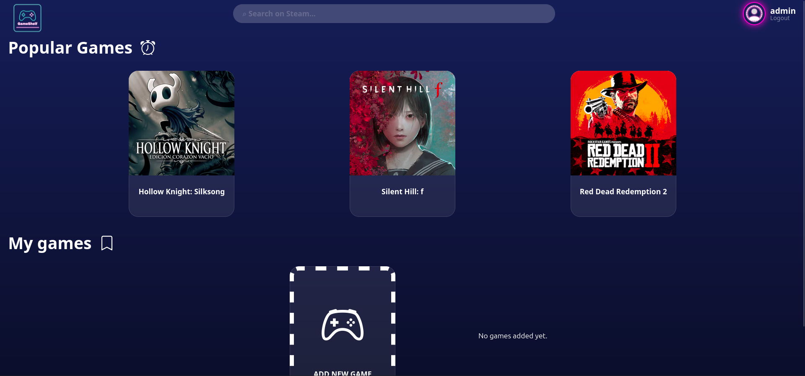
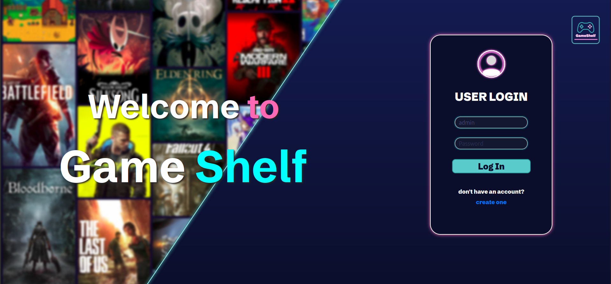
The platform features a secure authentication system and custom tracking states. By utilizing HTMX, the project implements a lightweight Server-Side Rendering (SSR) architecture, entirely avoiding the overhead of Client-Side Rendering (CSR) for seamless and fast user interactions. Everything is backed by a PostgreSQL database and containerized using Docker.
WEBASSEMBLY COMPILER
A custom compiler built from scratch that translates a statically typed, high-level language into WebAssembly (Wasm) executable code. It implements full lexical, syntactic, and semantic analysis phases.
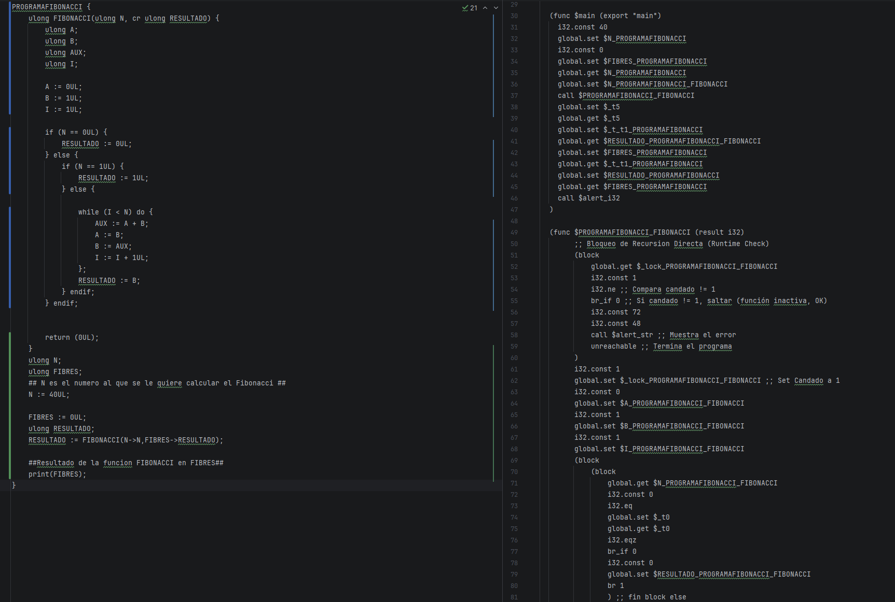
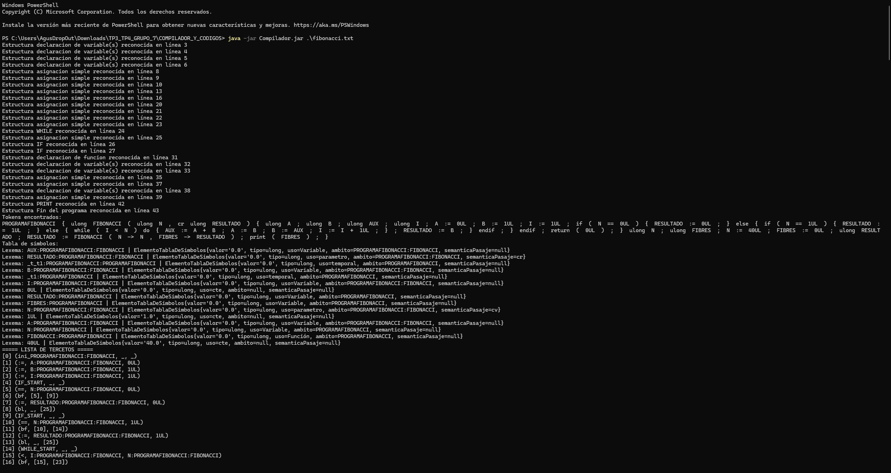
The architecture uses tercetos (triples) for its intermediate representation to structure the translation process before generating the final Wasm text format. It also features an integrated local server that automatically executes the compiled binary, displaying the standard output via an interactive browser console pop-out.
INFORMATION THEORY & COMPRESSION
A mathematical data analysis project that applies Information Theory concepts to real-world meteorological datasets. It models weather patterns using Markov Chains and utilizes Monte Carlo simulations to calculate stationary probabilities and mean recurrence times.
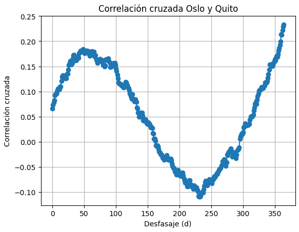
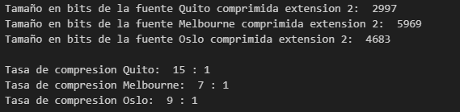
The core of the project focuses on algorithmic efficiency and data encoding. It features a custom, from-scratch implementation of the Huffman compression algorithm (utilizing min-heaps and binary trees) to verify Shannon's Source Coding Theorem. It also calculates entropy, channel noise, and mutual information.
SPOTIFY DATA EXPLORATION
A comprehensive Exploratory Data Analysis (EDA) project investigating the acoustic and metadata features of 90s music covers to determine factors influencing song popularity. Developed using Python, Pandas, and Scikit-learn.
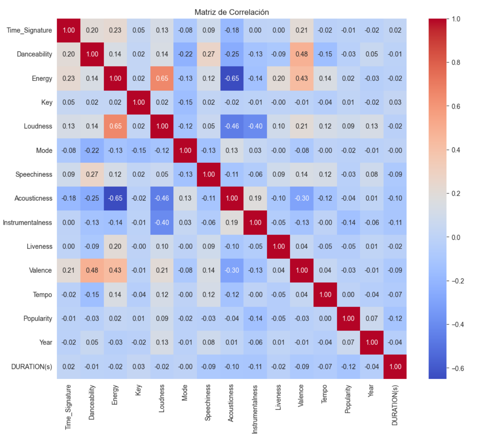
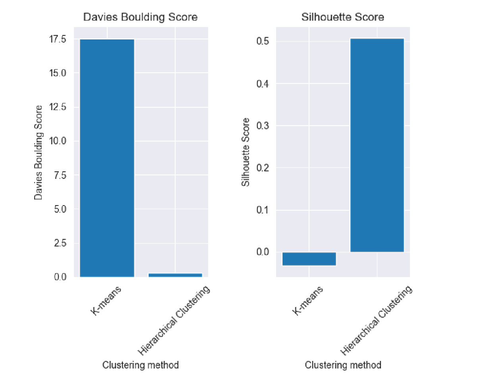
The analysis goes beyond simple visualizations by applying rigorous statistical hypothesis testing (ANOVA, Kruskal-Wallis, Mann-Whitney U) to validate correlations between audio features (e.g., Energy, Loudness, Acousticness). It also implements dimensionality reduction (PCA, t-SNE) and compares K-Means with Hierarchical Clustering to identify distinct musical subgenres based on audio data.